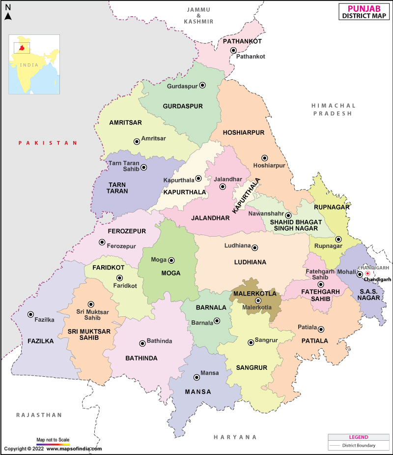
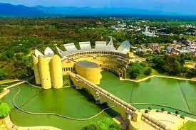
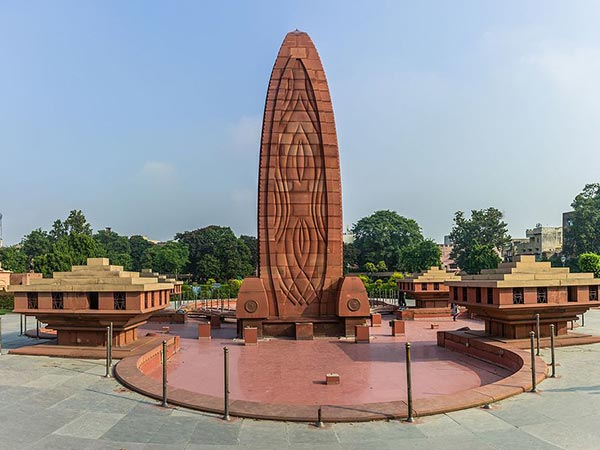
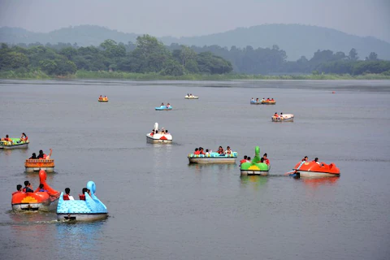
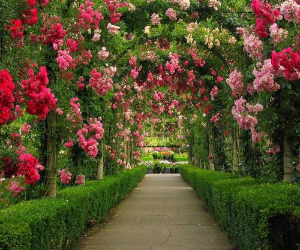

| Home | Amritsar | Jalandhar | Ludhiana |
|---|---|---|---|
| Welcome to Punjab | |||
|  |
History of PunjabThe History of Punjab refers to the past history of Punjab region which is a geopolitical, cultural, and historical region in the northwest of South Asia, comprising eastern Punjab province in Pakistan and western Punjab state in India.[1] It is believed that the earliest evidence of human habitation in Punjab traces to the Soan valley of the Pothohar, between the Indus and the Jhelum rivers, where Soanian culture developed between 774,000 BC and 11,700 BC. This period goes back to the first interglacial period in the second Ice Age, from which remnants of stone and flint tools have been found.[2] The Punjab region was the site of one of the earliest cradle of civilizations, the Bronze Age Harrapan civilization that flourished from about 3000 B.C. and declined rapidly 1,000 years later, following the Indo-Aryan migrations that overran the region in waves between 1500 and 500 B.C.[3] The migrating Indo-Aryan tribes gave rise to the Iron Age Vedic civilization, which lasted till 500 BC. |
||
| Famous Places | |||

Anandpur Sahib |

Jallianwala Bagh |

Sukhna Lake |

Rose Garden |
| Created by Riya Arora ©2024 | |||